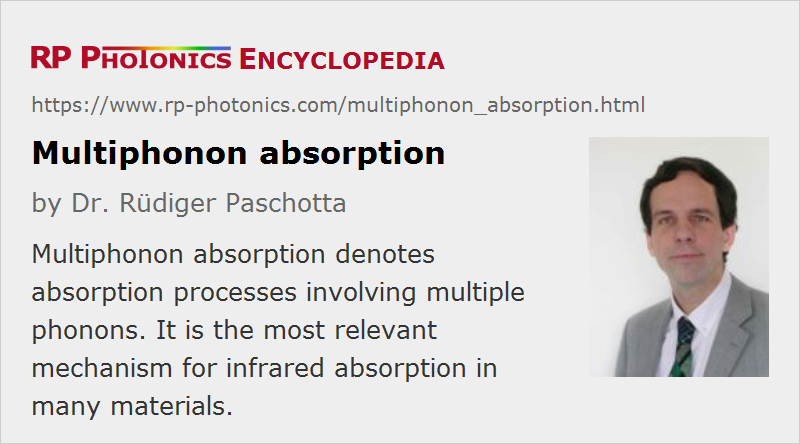

Multiphonon Absorption
Definition: absorption processes involving multiple phonons
More general term: optical absorption
German: Multiphononen-Absorption
Category: physical foundations
How to cite the article; suggest additional literature
Author: Dr. Rüdiger Paschotta
Dielectric optical materials and semiconductors exhibit some range of optical wavelengths where they are more or less transparent, i.e., exhibit low absorption. The long-wavelength limit of that transparency range, called the infrared absorption edge, is often determined by the onset of strong multiphonon absorption: absorption processes where multiple phonons are created in conjunction with the absorption of a single photon.
Multiphonon absorption is most relevant for ionic crystals and glasses, where neighbored ions with opposite electrical charges can perform vibrations against each other. Such vibrations, related to optical phonons, exhibit substantially higher frequencies than vibrations related to acoustical phonons, where neighbored atomic constituents vibrate approximately in phase. Still, such optical phonon frequencies are typically rather low compared with optical frequencies (photon frequencies). However, multiple such phonons combined can have an energy which equals the energy of one photon. Processes creating multiple phonons from a single photon involve complex coupling processes based on the anharmonicity of phonon modes and in some cases also electrical nonlinearities. They can lead to substantial absorption tails in spectral regions where one would otherwise have high transmission. The contributed absorption decays exponentially towards shorter optical wavelengths, as increasingly higher-order processes are required in that spectral region.
Multiphonon absorption must not be confused with multiphoton absorption, which is an entirely different process. Only slightly closer are multi-phonon transitions, where multiple phonons are emitted in conjunction with the relaxation of a dopant ion.
Example: Silica Fibers
As an example, consider silica (amorphous SiO2), which is the basis of silica fibers. The infrared absorption edge of silica is at approximately 2 μm; the propagation losses already rise substantially at wavelength longer than 1.7 μm (see Figure 1).

The observed infrared absorption edge is related to the stretching mode of Si–O bonds, which has a wavenumber of ≈1100 cm−1. Single-phonon absorption would require an optical wavelength of ≈9 μm. Due to multi-phonon processes, substantial absorption begins already for wavelengths below 2 μm.
Depending on the used fiber fabrication process, the silica glass can be more or less contaminated with water, which leads to hydroxyl (OH) groups. The fundamental resonance of the OH groups corresponds to wavelengths of ≈2.75 μm, and the second overtone at ≈1.38 μm falls into the intrinsic low-loss window of silica, forming a more or less prominent absorption peak, which can be detrimental for optical fiber communications in the 1.5-μm spectral region. The third harmonic is related to a peak at ≈0.95 μm, which can be relevant in other applications. Of course, these “OH overtone absorption peaks” constitute extrinsic losses, which can be minimized by resorting to fabrication techniques which lead to a minimum hydroxyl content of the material.
The intrinsic multi-phonon absorption related to the Si–O bond limits the applicability of silica fibers for infrared applications. In such cases one may resort to chalcogenide fibers, for example, which are made from have heavier constituents, leading to lower vibration frequencies and therefore correspondingly longer infrared absorption edges. The article on mid-infrared fibers gives more details.
Low-photon Energy Materials for Infrared Optics
Multiphonon absorption generally determines the infrared absorption edge of optical materials. In order to achieve good transmission and longer wavelengths, one has to use optical materials with particularly low phonon energies. Typically, these are substances containing a relatively heavy chemical elements, because those lead to slower lattice vibrations. For more details, see the article on infrared optics.
Questions and Comments from Users
Here you can submit questions and comments. As far as they get accepted by the author, they will appear above this paragraph together with the author’s answer. The author will decide on acceptance based on certain criteria. Essentially, the issue must be of sufficiently broad interest.
Please do not enter personal data here; we would otherwise delete it soon. (See also our privacy declaration.) If you wish to receive personal feedback or consultancy from the author, please contact him e.g. via e-mail.
By submitting the information, you give your consent to the potential publication of your inputs on our website according to our rules. (If you later retract your consent, we will delete those inputs.) As your inputs are first reviewed by the author, they may be published with some delay.
Bibliography
| [1] | L. L. Boyer et al., “Multiphonon absorption in ionic crystals”, Phys. Rev. B 11 (4), 1665 (1975), doi:10.1103/PhysRevB.11.1665 |
| [2] | C. R. Elliott and G. R. Newns, “Near infrared absorption spectroscopy of silica: OH overtones”, Appl. Spectroscopy 25 (3), 378 (1971) |
See also: phonons, silica fibers, mid-infrared fibers, multiphoton absorption, infrared optics
and other articles in the category physical foundations
|  |
If you like this page, please share the link with your friends and colleagues, e.g. via social media:
These sharing buttons are implemented in a privacy-friendly way!